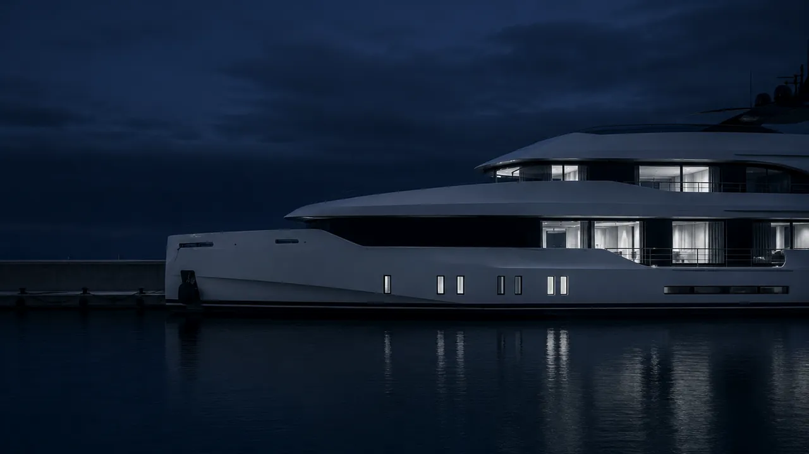

Catalogue de flotte premium
Fiches détaillées par navire — chantier, longueur (LOA), nombre de cabines, équipage, tarifs. Galerie HD plein écran en WebP nouvelle génération, chargée instantanément sans jamais pénaliser vos performances.

Votre clientèle compare les flottes en ligne avant le moindre contact. Un site lent ou amateur vous élimine de cette présélection — quelle que soit la qualité de vos navires. Je crée des sites pour brokers et sociétés de charter qui reflètent la valeur de votre flotte.
Un client qui cherche un yacht ne compare pas dix sites. Il réserve chez le premier qui lui donne envie de naviguer.
Le secteur du yachting brasse des budgets considérables — vente, charter, gestion de flotte. Pourtant, la majorité des sites de brokers et de sociétés de charter dans le Golfe de Saint-Tropez sont techniquement obsolètes : lents, non responsives, mal référencés à l'international. C'est une opportunité immense pour le broker qui sait être visible.
Votre image de marque se joue avant même la première poignée de main. Un acheteur potentiel qui visite votre site juge instantanément votre sérieux, votre niveau de service et la qualité de votre flotte — qu'il s'agisse d'une vente, d'une location à la semaine ou d'une gestion complète. Sans site visible sur "broker yacht Saint-Tropez" ou "yacht charter Var", vous êtes absent de cette décision — et chaque semaine de charter ou chaque vente non conclue représente un manque à gagner considérable.
Demander mon devis gratuitUn broker ou une société de charter n'achète pas un site vitrine — il achète un outil de présentation de navires valant parfois plusieurs millions d'euros. Chaque fonctionnalité est pensée pour cet enjeu.
Fiches détaillées par navire — chantier, longueur (LOA), nombre de cabines, équipage, tarifs. Galerie HD plein écran en WebP nouvelle génération, chargée instantanément sans jamais pénaliser vos performances.
Recherche en temps réel par longueur, chantier (Sanlorenzo, Azimut, Benetti...), nombre de cabines ou budget — propulsée par du JavaScript asynchrone ultra-fluide, sans rechargement de page.
Demande pré-remplie envoyée en un clic — dates, navire, nombre de passagers. Zéro friction pour une clientèle internationale habituée à des standards de service instantanés.
Structure optimisée pour cibler la clientèle anglophone, américaine et internationale — "yacht charter Saint-Tropez", "luxury yacht for sale Var". Hreflang multilingue dès la conception.
Synchronisation possible avec vos outils de gestion existants. Chaque demande de réservation ou de vente est centralisée sans double saisie — vous gagnez un temps précieux en haute saison.
Typographie élégante, espacement généreux, animations sobres et raffinées. Un site qui parle le même langage visuel que votre clientèle — exigeante, internationale, habituée au meilleur.
Un yacht se vend sur trois photos. Encore faut-il qu'elles chargent.
Sud Web Project — Yachting Golfe de Saint-TropezAucun autre bassin de navigation en France ne concentre une telle densité de yachts de prestige que le Golfe de Saint-Tropez. Chaque été, des centaines de navires mouillent entre la baie de Pampelonne, le port de Saint-Tropez et Port Grimaud — des voiliers classiques aux superyachts de plus de 40 mètres. Cette concentration attire une clientèle internationale exigeante : armateurs, family offices, courtiers en patrimoine, et particuliers fortunés venus d'Europe, des États-Unis et du Moyen-Orient.
Pour un broker ou une société de charter, cette clientèle ne se déplace pas au hasard. Elle présélectionne en ligne, compare les flottes, consulte les galeries, vérifie la réputation. Un site web performant n'est donc pas un accessoire marketing — c'est le premier point de contact qui détermine si votre société entre ou non dans la liste restreinte des prestataires consultés.
Un broker spécialisé dans la vente de yachts a besoin d'un site qui inspire confiance sur le long terme — fiches techniques détaillées, historique d'entretien valorisé, processus de transaction clair. La décision d'achat se prend sur plusieurs semaines ou mois, et le site doit accompagner cette réflexion avec des informations complètes et une image irréprochable.
Une société de charter fonctionne sur un cycle de décision beaucoup plus court — souvent quelques jours avant la date souhaitée. Le site doit donc permettre une réservation rapide : disponibilités claires, formulaire simplifié, contact WhatsApp immédiat. Chaque jour de délai dans le processus de réservation est un jour de charter qui risque de partir chez un concurrent plus réactif.
Une société de gestion de flotte a des besoins encore différents — présentation de l'expertise technique, des certifications, des références clients, souvent avec un espace dédié aux propriétaires de navires. Je conçois chaque site en fonction de ce cycle de décision spécifique à votre activité, pas selon un template générique.
Dans le secteur du yachting, l'écart entre la valeur réelle d'un navire et la qualité de sa présentation en ligne crée un décalage qui coûte cher. Un yacht de plusieurs millions d'euros présenté avec des photos compressées, un site lent sur mobile ou un design daté envoie un signal de négligence qui peut faire fuir un acheteur ou un locataire potentiel avant même le premier échange. L'image projetée par votre site doit être à la hauteur de la valeur de ce que vous proposez.
À l'inverse, un site rapide, élégant et bien référencé devient un véritable outil commercial qui travaille pour vous 24h/24, capte les recherches qualifiées en plusieurs langues, et filtre naturellement les contacts sérieux. C'est l'investissement le plus rentable pour un broker ou une société de charter dans le Golfe de Saint-Tropez.
Saint-Tropez concentre le marché le plus prestigieux du yachting français — port emblématique, clientèle internationale haut de gamme, transactions à forte valeur. J'ai créé une page entièrement dédiée à ce marché spécifique, avec un SEO optimisé pour les requêtes locales et internationales propres à ce port.
Voir la page broker yacht Saint-TropezYachting de prestige · Golfe de Saint-Tropez
Je connais le rythme du Golfe, la saisonnalité du charter et les spécificités des marinas du secteur. Votre site est pensé pour ce marché précis, pas pour un nautisme générique.
Votre clientèle est internationale. Un site multilingue dès la conception capte les recherches anglophones, italiennes et allemandes — pas une traduction approximative ajoutée après coup.
Zéro WordPress, code à la main. Des galeries de yachts en haute définition qui chargent instantanément, même sur mobile en 4G depuis un port.
Très peu d'agences web ciblent spécifiquement les brokers yacht avec une expertise dédiée. Une opportunité de vous positionner durablement sur des requêtes à forte valeur.
Code, contenu, domaine — tout vous appartient. Pas de plateforme propriétaire. Maintenance optionnelle à partir de 60€/mois.
Pas d'agence généraliste. Vous parlez directement avec moi, du brief jusqu'à la mise en ligne et au-delà. Devis sous 24h.
Vous vendez du soin du détail. Faites-le voir avant de le promettre.
Sud Web Project — Yachting Golfe de Saint-TropezPas de frais cachés. Un devis avant de commencer. Vous restez propriétaire à 100%.
L'hébergement et le nom de domaine sont à votre charge. Vous restez propriétaire à 100% de votre site.
Saint-Tropez, Ramatuelle, Gassin et Grimaud forment le cœur du yachting de prestige dans le Var. Chaque commune a sa propre page SEO.
Votre site de broker ou de charter existe mais ne reflète plus la valeur de votre flotte ? Refonte complète — nouveau design, nouvelles performances, SEO international remis à plat.
Voir la refonteVotre site doit rester irréprochable en haute saison. Forfaits maintenance à partir de 60€/mois — sécurité, sauvegardes, modifications, monitoring.
Voir la maintenanceLe tarif ne dépend pas simplement du nombre de pages. Chaque projet est différent : le prix dépend du niveau de personnalisation, des objectifs, des fonctionnalités et de l'accompagnement souhaité. Mes projets commencent à 850€ avec l'offre Essentiel. L'offre Premium commence à 1 500€ — catalogue de flotte, fiches yachts et SEO international. Les projets nécessitant une expérience entièrement personnalisée (CRM, disponibilités en ligne, WhatsApp) font l'objet d'un devis sur mesure avec l'offre Ultra. Devis gratuit sous 24h.
Oui. La clientèle du yachting présélectionne en ligne avant tout contact direct. Un site lent ou amateur élimine un broker de cette présélection, quelle que soit la qualité de sa flotte. Un site rapide et bien référencé filtre naturellement les contacts sérieux.
Oui. FR/EN/IT/DE selon votre clientèle cible. La clientèle du yachting à Saint-Tropez est majoritairement anglophone, américaine et internationale — un site multilingue natif est quasiment indispensable pour ce secteur.
Non. J'interviens dans tout le bassin du yachting du Golfe : Saint-Tropez, Ramatuelle (Pampelonne), Gassin, Grimaud (Port Grimaud) et plus largement le Var.
Site Premium en 2 semaines. Site Ultra multilingue en 3 à 4 semaines. Délai garanti dans le devis.
Développeur web spécialisé yachting de prestige dans le Golfe de Saint-Tropez. Devis gratuit sous 24h, maquette avant de commencer.
Création site internet broker yacht · Site internet yacht charter Saint-Tropez · Création site internet vente de yacht · Création site internet nautisme Var · Site internet yachting Golfe de Saint-Tropez